Acivity1
Task
Download packet tracer and create a network od two devices connected via switch and then ping one device from another.
Steps
Open packet tracer
From bottom choose end devices put a computer and a loptop in the above area
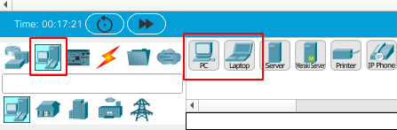
In networking devices->Switch ->2960 drag an drop above
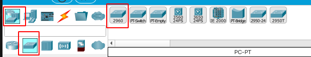
Arrange like
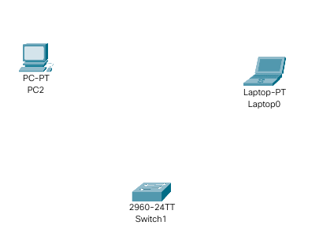
Choose copper straight wire
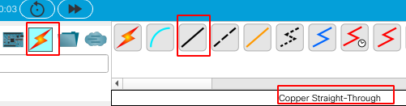
Use fast ethernet
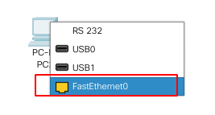
Use fast ethernet 0/1 on switch
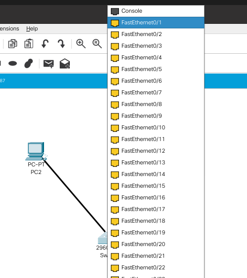
Do same with second device
It will look like
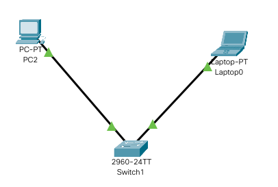
Left click on end device
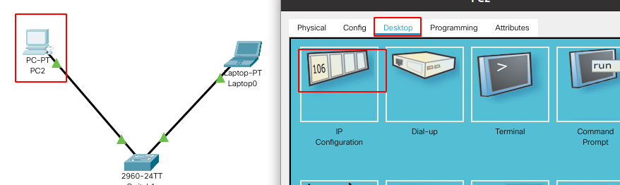
Give it a static IP
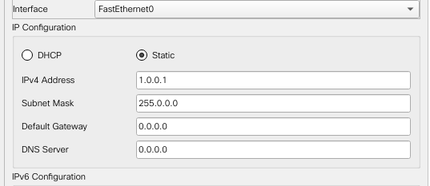
Move to next device and give it a static IP of same subnet so that they can communicate locally.
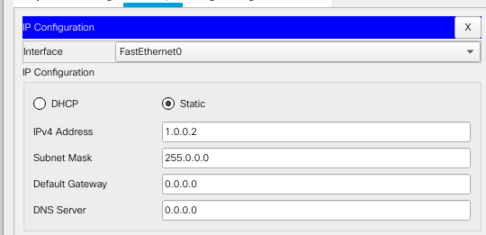
Try pinging on device from another via cmd of one device
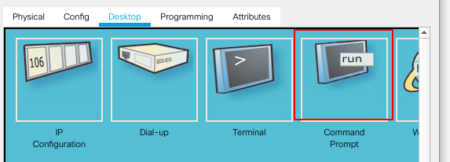
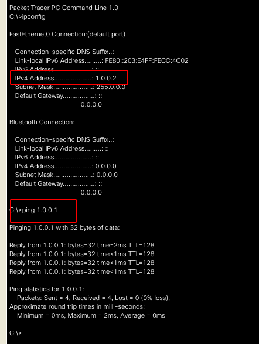